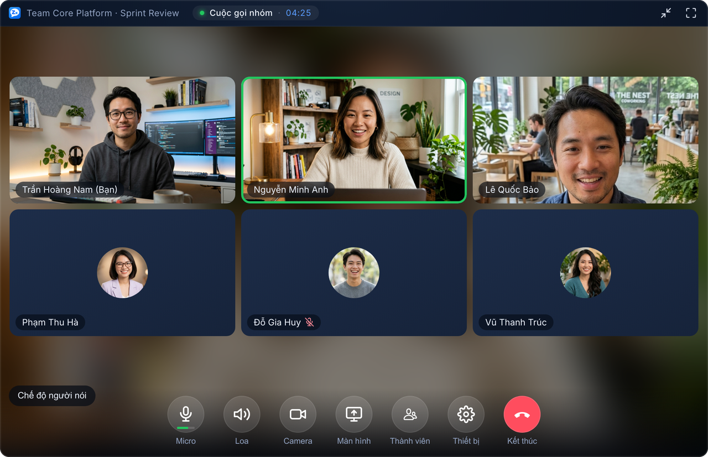
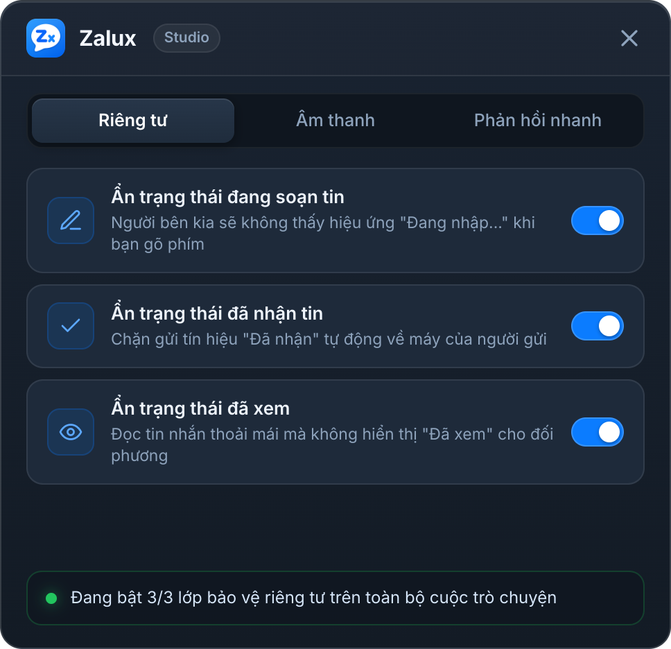
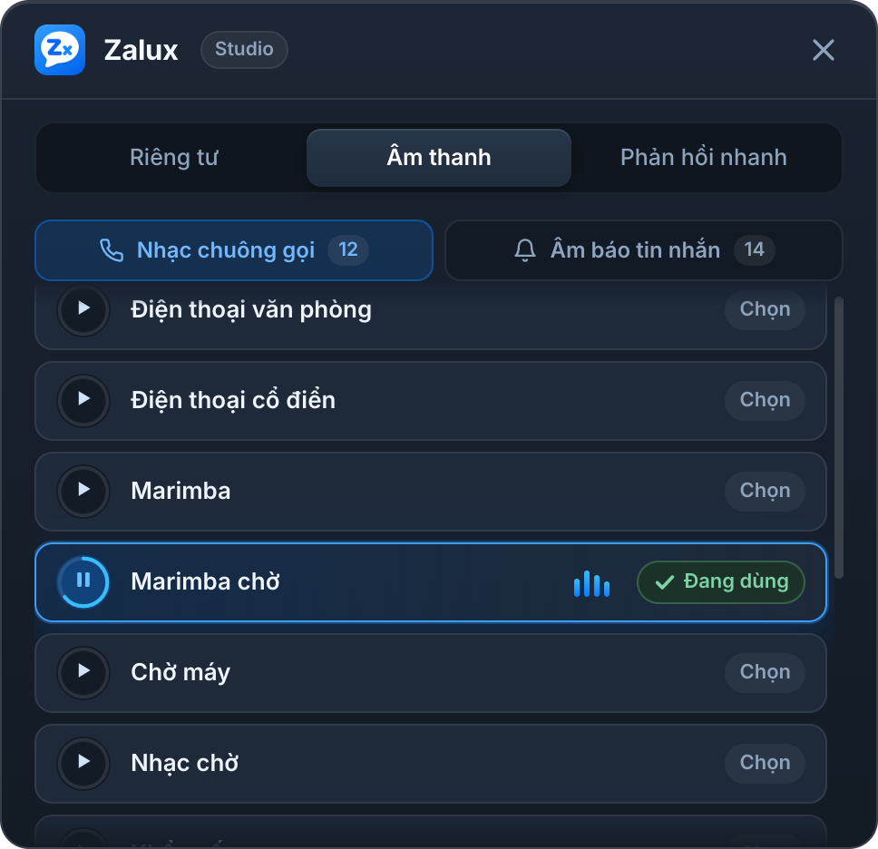

Cửa sổ cuộc gọi đến thông minh
Nhận cuộc gọi video mở sẵn camera hoặc chọn Không mở camera (camStartOff) để vào thẳng phiên gọi kín đáo mà không bị ngắt kết nối.
Giao diện Zalo chính thức kết hợp Call Engine 1:1 / Nhóm và 9 module native tự phát triển hoàn toàn bằng Rust.

Tự viết độc lập từ đầu, không kế thừa dự án MIT hay script bên thứ ba
Daemon gọi điện chạy nền siêu nhẹ, loại bỏ hoàn toàn helper Qt5 và Wine
Module native biên dịch cho Linux x86_64: SQLite FTS5, ZDB4, JPEG XL, xử lý ảnh
Giải mã H.264 & HEVC tức thì, họp nhóm Zavi SFU và chia sẻ màn hình PipeWire
Giao diện cuộc gọi và nhân xử lý zcall-engine được thiết kế riêng cho Linux: giải mã H.264/HEVC độ trễ 0 khung hình, bố cục nhóm kiểu Zoom tự khớp khung hình dọc/ngang và ScreenCast qua PipeWire + OpenH264.
Nhận cuộc gọi video mở sẵn camera hoặc chọn Không mở camera (camStartOff) để vào thẳng phiên gọi kín đáo mà không bị ngắt kết nối.
Bật tắt ẩn trạng thái “đang soạn tin”, “đã nhận” và “đã xem” ngay trên thanh công cụ trái (Ctrl+Shift+P), chặn trực tiếp trên máy trước khi gửi lên máy chủ.

Nghe thử trực tiếp từng mẫu âm thanh ngay trong bảng cài đặt Zalux và áp dụng tức thì cho cuộc gọi đến hoặc tin nhắn mới.

Giữ trọn trải nghiệm quen thuộc của Zalo Desktop, viết mới toàn bộ các module hệ thống để vận hành ổn định trên Linux.
Xử lý trọn vẹn gọi 1:1 và họp nhóm qua zcall-engine: mã hoá SRTP hai chiều, âm thanh Opus 16 kHz, giải mã H.264 & HEVC độ trễ 0 khung hình qua libavcodec, chỉnh âm lượng micro trực tiếp và tự lọc bỏ thiết bị âm thanh ảo hoặc camera hồng ngoại (IR).
Thu màn hình trên Wayland và X11 qua xdg-desktop-portal + PipeWire MemFd, nén OpenH264 15fps trên luồng riêng mà không cần GPU encoder.
Khoá điều hướng cửa sổ gọi nội bộ, giới hạn quyền micro/camera cho trang cục bộ và lưu ảnh tạm clipboard trong thư mục riêng quyền 0700.
Thay thế trọn bộ addon gốc của macOS bằng bản biên dịch ELF64 Linux x86_64 (~15.4 MB sau khi strip): node_sqlite3, db-cross-v4, zjxl, zimage, mp4thumb, file-utils, file-utilities, zwalker và zlang.
Khay hệ thống (System Tray) hiển thị huy hiệu tin chưa đọc đồng bộ với Dock GNOME/KDE, tự đồng bộ thanh tiêu đề tối _GTK_THEME_VARIANT=dark, dán ảnh trực tiếp qua wl-paste / xclip và chọn XWayland/Wayland tối ưu.
Cài ngay từ AppImage / .deb hoặc tự đóng gói lại từ bộ cài DMG chính thức không cần cài Rust hay Node.js.
Số liệu đo thực tế qua /proc/<pid>/smaps_rollup trên Ubuntu Wayland/XWayland khi tải cơ sở dữ liệu lịch sử trò chuyện lớn.
Thay vì gánh thêm tiến trình GUI phụ nặng 80-150 MB RSS hoặc lớp dịch Wine tốn 300-500 MB RAM, zcall-engine xử lý toàn bộ âm thanh, video và chia sẻ màn hình chỉ với vài MB bộ nhớ vật lý.
Trong tổng mức ~788 MB PSS khi mở nhiều cuộc trò chuyện lớn, nhân Chromium/Electron chiếm ~98.8% (~778 MB); toàn bộ hệ thống Rust của Zalux vận hành gọn gàng trong phần còn lại.
| Thành phần hệ thống | Bản gốc (C++/Qt5) hoặc chạy qua Wine | Zalux trên Linux (Native Rust) |
|---|---|---|
| Daemon Call Engine chạy nền (Idle) | ZaloCall C++ / Qt5 Widgets: ~80-150 MB RSS | zcall-engine Rust thuần: ~3.4 MB PSS (~5.8 MB RSS) |
| Giải mã Video H.264 / HEVC trực tiếp | Phụ thuộc tiến trình helper GUI phụ nặng nề | --decode-pipe (0-frame delay): ~6.0 MB PSS (~12.0 MB RSS) |
9 Module hệ thống N-API (.node) |
Nhiều dynamic library và framework rời | ~15.4 MB trên đĩa sau khi strip, chạy trực tiếp trong tiến trình |
| Tổng RAM ứng dụng (nhiều DB chat lớn) | ~650-950 MB (+300-500 MB nếu chạy qua Wine) | ~788 MB PSS (Electron/UI Zalo ~778 MB, tầng Rust < 1.2%) |
Đo kiểm trung thực: phần lớn RAM thuộc về nhân hiển thị web Electron của giao diện Zalo. Tầng Rust đảm bảo các tác vụ thời gian thực (VoIP/SFU, mã hoá SRTP, PipeWire ScreenCast, SQLite FTS5, JPEG XL) đạt tốc độ native trên Linux mà không làm nặng máy.
Cài nhanh tự động vào ~/.local/opt/zalux hoặc chọn đúng bản phân phối Linux của bạn để cài gói thư viện hệ thống kèm PipeWire và Portal.
Tự tải bản phát hành mới nhất, tích hợp biểu tượng menu ứng dụng và tạo lệnh ~/.local/bin/zalux.
curl -fsSL https://raw.githubusercontent.com/todo-laterx/zalux/main/scripts/bootstrap.sh | bashsudo apt install libopus0 libpipewire-0.3-0t64 xdg-desktop-portal \
pulseaudio-utils ffmpeg libgtk-3-0t64 libnss3 libx11-xcb1 \
libxcb-dri3-0 libgbm1 libasound2t64 libsecret-1-0git clone https://github.com/todo-laterx/zalux.git
cd zalux
./scripts/install-latest.shsudo apt install libopus0 libpipewire-0.3-0 xdg-desktop-portal \
pulseaudio-utils ffmpeg libgtk-3-0 libnss3 libx11-xcb1 \
libxcb-dri3-0 libgbm1 libasound2 libsecret-1-0git clone https://github.com/todo-laterx/zalux.git
cd zalux
./scripts/install-latest.shsudo dnf install opus pipewire-libs xdg-desktop-portal \
pulseaudio-utils ffmpeg gtk3 nss libX11-xcb libxcb \
mesa-libgbm alsa-lib libsecretgit clone https://github.com/todo-laterx/zalux.git
cd zalux
./scripts/install-latest.shsudo pacman -S opus libpipewire xdg-desktop-portal libpulse \
ffmpeg gtk3 nss libx11 libxcb mesa alsa-lib libsecret gitgit clone https://github.com/todo-laterx/zalux.git
cd zalux
./scripts/install-latest.shMiễn phí, mã nguồn mở MIT, tự đóng gói minh bạch và tối ưu tài nguyên bằng Rust.